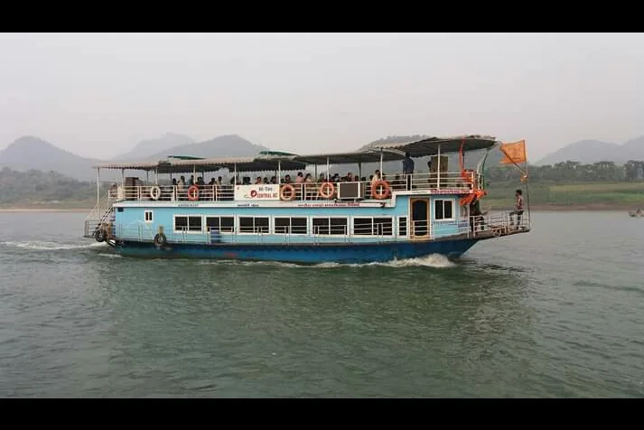
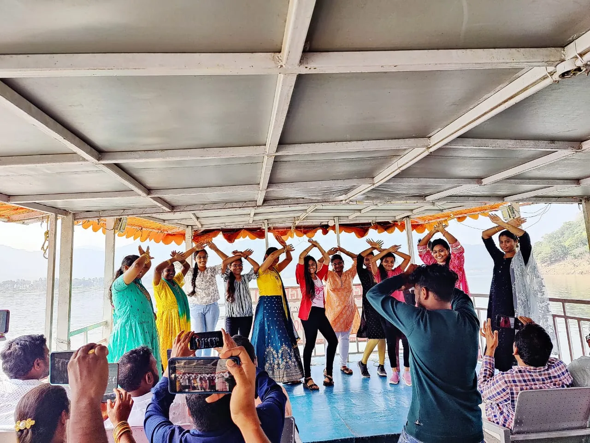

Sleep Inside the Hills: A Papikondalu Night Stay at Koruturu
Cottages above the river, a campfire, a dawn forest trek and a sky full of stars: the Papikondalu night stay, explained.
A day trip shows you Papikondalu. A night stay lets you feel it. When the last boat has turned for home and the hills go from green to blue to black, you are still there, with a campfire at your feet and a sky that has more stars than a city ever allows. This is the story of the Papikondalu night stay at Koruturu.

Why stay overnight at Papikondalu?
On the 1-day tour you spend most of your day on the boat and return to Rajahmundry by evening. That is wonderful, but the gorge is at its quietest when the day boats have gone. The night stay turns a boat ride into a small adventure: more time in the hills, an evening around a fire and an early-morning walk through forest that most day visitors never see.
- Quiet. Evening and early morning at Koruturu are peaceful and unhurried.
- Adventure. Campfire, forest trekking and a water-canal experience.
- Great for groups. Friends, families and colleagues enjoy an evening together without anyone worrying about the road home.
- Good value. One package covers the boat journey, dinner, stay, breakfast and the return.
Day one: the river carries you to Koruturu
Your day begins at 7:30 AM with a pickup from Rajamahendravaram Railway Station. After boat check-in and breakfast at 9:00 AM, you head down the Godavari via Devipatnam, where there is a police check, so carry ID. Lunch is vegetarian, served on the boat around 1:00 PM.
At about 2:00 PM you enter the Papikondalu gorge, then stop at the Perantapalli tribal village, its ashram and the Veereswara Swamy Temple around 3:00 PM. By 4:30 PM the boat reaches the Koruturu camp, just as the afternoon sun begins to turn gold.

The evening at Koruturu: cottages, campfire, dinner
Koruturu is a small riverside spot of thatched, bamboo-style cottages set among trees and gardens above the Godavari. You check in, freshen up, and have evening snacks while the light changes. As it gets dark, the staff light the campfire. Dinner is served, conversation drifts, and someone usually starts a song.

"No traffic, no notifications, just river sounds and a fire that never quite goes out."
For the best night: carry a torch, wear warm socks, and keep your phone for photographs of the sky rather than scrolling. Winter evenings near the water can be cool, so bring a jacket.
Day two: forest trek, canal and the ride home
Day two starts early. Before breakfast, you go for a forest trek and a water-canal experience, the part of the trip that most day visitors never get to see. The air is cool, birds are active and the hills have that fresh, washed look.
After 9:00 AM breakfast and some local sightseeing, a vegetarian or non-vegetarian lunch at 1:00 PM is served. At 2:00 PM the boat picks you up for the return journey, you reach Gandirevu around 5:30 PM and travel by road to Rajahmundry, arriving at about 7:00 PM. Need to go on to Bhadrachalam? An optional Bhadrachalam drop is available for ₹150 extra per person.
Koruturu cottages
 Sunset from the boat
Sunset from the boat
 Misty hills
Misty hills

On the Godavari Papikondalu at sunset
Papikondalu at sunset

Group fun on boardPack for the night
Day tour vs night stay: which should you choose?
| 1-Day Tour | Night Stay | |
|---|---|---|
| Duration | 1 day, back by about 7:30 PM | 2 days / 1 night, back by about 7:00 PM on day 2 |
| Price | ₹1,300 adult, ₹1,100 child | ₹5,500 adult, ₹5,000 child (3 to 10 yrs) |
| Group size | Any | Minimum 4 members |
| Extras | Breakfast and vegetarian lunch on the boat | Stay, dinner, campfire, forest trek, water canal, two days of meals |
| Best for | First-timers, tight schedules | Groups, slow travellers, photographers |
Not sure? Read the hour-by-hour day-trip story, then take the quiz below.
Which Papikondalu trip is for you?
Book the Papikondalu night stay
₹5,500 per adult, ₹5,000 per child (3 to 10 yrs). Minimum 4 members.
Frequently asked questions
The night stay is at Papikondalu Resorts in Koruturu, a quiet spot above the Godavari that you reach by boat on the first day of the tour.
₹5,500 per adult and ₹5,000 per child (3 to 10 years). A minimum of 4 members is required.
The boat journey through Papikondalu, breakfast and vegetarian lunch on the boat on day one, evening snacks, dinner, accommodation and a campfire at Koruturu, then an early-morning forest trek, a water-canal experience, breakfast and lunch on day two, and the return journey to Rajahmundry.
The return boat leaves Koruturu around 2:00 PM, you reach Gandirevu around 5:30 PM, and you are back in Rajahmundry around 7:00 PM. An optional Bhadrachalam drop is available for ₹150 extra per person.
Children aged 3 to 10 are priced separately, and families travel with us regularly. The pace is relaxed. Tell us your group when you book so we can advise.
 Papikondalu in WinterMonth-by-month season guide
Papikondalu in WinterMonth-by-month season guide A Day on the Godavari: Hour by HourWalk through the whole 1-day trip
A Day on the Godavari: Hour by HourWalk through the whole 1-day trip Papikondalu Tour PackagesPrices, schedules and booking
Papikondalu Tour PackagesPrices, schedules and booking